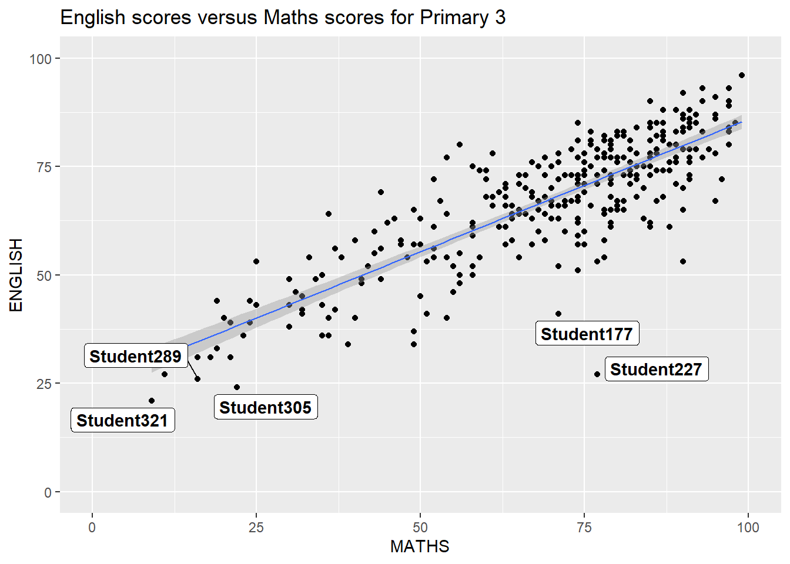

Code
pacman::p_load(ggrepel, patchwork,
ggthemes, hrbrthemes,
tidyverse) In this chapter, I will be introduced to several ggplot2 extensions for creating more elegant and effective statistical graphics. By this exercise, I will be able to:
control the placement of annotation on a graph by using functions provided in ggrepel package,
create professional publication quality figure by using functions provided in ggthemes and hrbrthemes packages,
plot composite figure by combining ggplot2 graphs by using patchwork package.
In this exercise, beside tidyverse, four R packages will be used. They are:
ggrepel: an R package provides geoms for ggplot2 to repel overlapping text labels.
ggthemes: an R package provides some extra themes, geoms, and scales for ‘ggplot2’.
hrbrthemes: an R package provides typography-centric themes and theme components for ggplot2.
patchwork: an R package for preparing composite figure created using ggplot2.
Code chunk below will be used to check if these packages have been installed and also will load them onto your working R environment.
pacman::p_load(ggrepel, patchwork,
ggthemes, hrbrthemes,
tidyverse) For the purpose of this exercise, a data file called Exam_data will be used. It consists of year end examination grades of a cohort of primary 3 students from a local school. It is in csv file format.
The code chunk below imports exam_data.csv into R environment by using read_csv() function of readr package. readr is one of the tidyverse package.
exam_data <- read_csv("data/Exam_data.csv")There are a total of seven attributes in the exam_data tibble data frame. Four of them are categorical data type and the other three are in continuous data type.
The categorical attributes are: ID, CLASS, GENDER and RACE.
The continuous attributes are: MATHS, ENGLISH and SCIENCE.
One of the challenge in plotting statistical graph is annotation, especially with large number of data points.

ggplot(data=exam_data,
aes(x= MATHS,
y=ENGLISH)) +
geom_point() +
# Add a linear regression line
geom_smooth(method = lm, size = 0.5) +
# Add labels for each point with their ID
geom_label(aes(label = ID), hjust = 0.5, vjust = -0.5) +
# Set the coordinate limits for x and y axes
coord_cartesian(xlim = c(0, 100), ylim = c(0, 100)) +
ggtitle("English scores versus Maths scores for Primary 3")ggrepel is an extension of ggplot2 package which provides geoms for ggplot2 to repel overlapping text as in our examples on the right.

We simply replace geom_text() by geom_text_repel() and geom_label() by geom_label_repel.

ggplot(data=exam_data,
aes(x= MATHS,
y=ENGLISH)) +
geom_point() +
geom_smooth(method=lm,
size=0.5) +
# Add repelling labels for each point with their ID
geom_label_repel(aes(label = ID),
fontface = "bold") +
coord_cartesian(xlim=c(0,100),
ylim=c(0,100)) +
ggtitle("English scores versus Maths scores for Primary 3")We can see that geom_label() places labels at specified coordinates without considering overlap, while geom_label_repel() automatically adjusts label positions to avoid overlap, resulting in a cleaner and more readable plot.
ggplot2 comes with eight built-in themes, they are: theme_gray(), theme_bw(), theme_classic(), theme_dark(), theme_light(), theme_linedraw(), theme_minimal(), and theme_void().
ggplot(data=exam_data,
aes(x = MATHS)) +
geom_histogram(bins=20,
boundary = 100,
color="blue",
fill="#3459e6") +
ggtitle("Distribution of Maths scores") +
theme_light()In this part, I try to change the colour to “blue” and the fill to “#3459e6” as well as the theme to “theme_light”.
Refer to this link to learn more about ggplot2 Themes
ggthemes provides ‘ggplot2’ themes that replicate the look of plots by Edward Tufte, Stephen Few, Fivethirtyeight, The Economist, ‘Stata’, ‘Excel’, and The Wall Street Journal, among others.
In the example below, I try to use Fivethirtyeight theme.
ggplot(data=exam_data,
aes(x = MATHS)) +
geom_histogram(bins=20,
boundary = 100,
color="blue",
fill="#3459e6") +
ggtitle("Distribution of Maths scores") +
theme_fivethirtyeight()It also provides some extra geoms and scales for ‘ggplot2’. Consult this vignette to learn more.
hrbrthemes package provides a base theme that focuses on typographic elements, including where various labels are placed as well as the fonts that are used.
ggplot(data=exam_data,
aes(x = MATHS)) +
geom_histogram(bins=20,
boundary = 100,
color="blue",
fill="#3459e6") +
ggtitle("Distribution of Maths scores") +
theme_ipsum()The second goal centers around productivity for a production workflow. In fact, this “production workflow” is the context for where the elements of hrbrthemes should be used. Consult this vignette to learn more.
ggplot(data=exam_data, aes(x = MATHS)) + geom_histogram(bins=20, boundary = 100, color="blue", fill="#3459e6") + ggtitle("Distribution of Maths scores") + theme_ipsum(axis_title_size = 18,
base_size = 15,
grid = "Y")axis_title_size argument is used to increase the font size of the axis title to 18,
base_size argument is used to increase the default axis label to 15, and
grid argument is used to remove the x-axis grid lines.
It is not unusual that multiple graphs are required to tell a compelling visual story. There are several ggplot2 extensions provide functions to compose figure with multiple graphs. In this section, you will learn how to create composite plot by combining multiple graphs. First, let us create three statistical graphics by using the code chunk below.
p1 <- ggplot(data=exam_data,
aes(x = MATHS)) +
geom_histogram(bins=20,
boundary = 100,
color="blue",
fill="#3459e6") +
ggtitle("Distribution of Maths scores") +
coord_cartesian(xlim=c(0,100)) Next
p2 <- ggplot(data=exam_data,
aes(x = ENGLISH)) +
geom_histogram(bins=20,
boundary = 100,
color="blue",
fill="#3459e6") +
ggtitle("Distribution of English scores") +
coord_cartesian(xlim=c(0,100)) Lastly, we will draw a scatterplot for English score versus Maths score by as shown below
p3 <- ggplot(data=exam_data,
aes(x= MATHS,
y=ENGLISH)) +
geom_point(color = "#3459e6") +
geom_smooth(method=lm,
size=0.5,
color = "blue") +
coord_cartesian(xlim=c(0,100),
ylim=c(0,100)) +
ggtitle("English scores versus Maths scores for Primary 3")In this part, I try to change the smooth’s color to “blue” and the point’s color to “#3459e6”.
There are several ggplot2 extension’s functions support the needs to prepare composite figure by combining several graphs such as grid.arrange() of gridExtra package and plot_grid() of cowplot package. In this section, I am going to shared with you an ggplot2 extension called patchwork which is specially designed for combining separate ggplot2 graphs into a single figure.
Patchwork package has a very simple syntax where we can create layouts super easily. Here’s the general syntax that combines:
Two-Column Layout using the Plus Sign +.
Parenthesis () to create a subplot group.
Two-Row Layout using the Division Sign /
Figure in the tabset below shows a composite of two histograms created using patchwork. Note how simple the syntax used to create the plot!
p1 + p2We can plot more complex composite by using appropriate operators. For example, the composite figure below is plotted by using:
“|” operator to stack two ggplot2 graphs,
“/” operator to place the plots beside each other,
“()” operator the define the sequence of the plotting.
(p1 / p2) | p3To learn more about, refer to Plot Assembly.
In order to identify subplots in text, patchwork also provides auto-tagging capabilities as shown in the figure below.
((p1 / p2) | p3) +
plot_annotation(tag_levels = 'I')Beside providing functions to place plots next to each other based on the provided layout. With inset_element() of patchwork, we can place one or several plots or graphic elements freely on top or below another plot.
p3 + inset_element(p2,
left = 0.02,
bottom = 0.7,
right = 0.5,
top = 1)Figure below is created by combining patchwork and theme_economist() of ggthemes package discussed earlier.
patchwork <- (p1 / p2) | p3
patchwork & theme_economist()